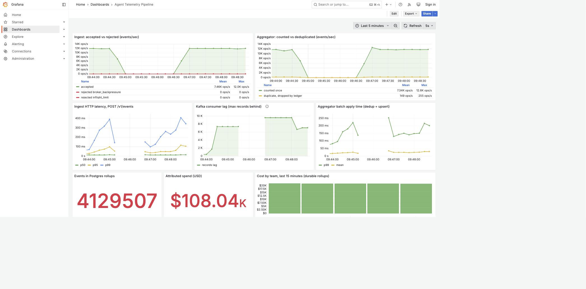

anvil
github.com/anhermon/anvilA single-binary agent harness in Rust: pluggable LLM providers, sub-agents, a skill library, and persistent episodic memory in SQLite.
ANGEL HERMON
I build systems and the tools around them.
Right now that's agentic engineering: harnesses, MCP tracing, and observability for agent runs.
Available for freelance and contract work. If your agent pipeline works in a demo and not in production, or has failures you can't see, that's the problem I solve.
Below are six panels. All six replay data from systems that actually ran — agent sessions, eval harnesses, an MCP proxy, a load-tested pipeline, a Kubernetes autoscaler reacting to Kafka lag, and a multi-tenant ingestion platform. Nothing here is a mockup or a diagram of something that doesn't exist yet.
Source: one of my own Claude Code sessions, captured from the workflow
API of a fleet dashboard I wrote. Session opened 2026-07-26, snapshot taken
2026-07-30 while it was still running — three agents were mid-flight at
capture, so this is a live session frozen, not a finished one.
What is real: the fan-out shape, every start time, every duration,
every status, the model and effort each agent resolved to, and the tool and
token counts. What was removed: prompts, summaries, file paths and
repo names. Each agent is identified by the first four characters of its id
and by the task class the router assigned it.
Read it as: 44 conversation turns, 19 of which delegated work. Each row
is one turn, scaled to its own elapsed span — bar lengths are comparable
within a row, not across rows. Hover or tab a bar for its exact numbers.
Hover or tab a bar to inspect an agent.
Gate: 9 runs of a local agent harness on 2026-07-30, one bug-fix task,
`gemma4` over Ollama. Fresh $HOME per run, memory database asserted
absent before each. Success was not judged by the harness: a held-out
test file was copied in only after the run had finished, and
cargo test decided. Numbers read from that harness's own log files.
Arena: 120 recorded runs of a harness-comparison tool I wrote, 25–26
July 2026. Two runs stored no cell data and are excluded from every figure here,
leaving 118. Status is completion, not quality — only 21 cells were
ever graded by a human, so this panel ranks whether a cell finished and how long
it took, and claims nothing about whether the output was good.
Hover or tab a row for its detail.
The finding: the harness exited 0 and reported outcome=done on
every one of the 8 runs of the harder task. The held-out test disagreed twice.
A cron loop built on that exit code would have recorded 8 successes and shipped 2
broken repos. The fix is not a better model — it is moving the pass/fail
decision outside the thing being graded.
Source: docs/img/demo.cast in
anhermon/mcp-trace — a
public asciinema recording of the project's own demo, made 2026-07-28. The proxy
sits between an MCP client and an MCP server, changes nothing about the protocol,
and emits one OpenTelemetry span per JSON-RPC tools/call. Every start
time, duration and error flag below is read straight out of that recording's
span started / span ended log lines.
No waterfall, deliberately: each trace here is exactly one span, so there
is no parent-child nesting to draw. Anything shaped like a nested waterfall would
be invented. The last span was still in flight when the recording stopped and is
drawn open-ended.
mcp-trace · 2026-07-28 08:14 UTC
hover a span for the log line it came from
Hover or tab a span.
Source: anhermon/agent-telemetry-pipeline,
built and load-tested 2026-07-31. Java 21 / Spring Boot ingest → Kafka → aggregator → Postgres +
Redis, running under its own docker compose stack — a laptop's Docker VM, 10 CPUs shared with
other containers, not dedicated hardware. Every number below is printed next to the command that produced it
in that repo's README; nothing here is extrapolated, rounded or invented.
Read it as: the shape matters, not the absolute rate — the aggregator drains faster than events
arrive, consumer lag stays bounded and returns to zero, and the dedup ledger rejects almost exactly the
duplicate rate the load generator was configured to produce.
Hover or tab a line or bar for the exact figures.
Correctness at volume: a longer unattended run pushed 3,586,900 events through — 3,527,091
counted, 59,809 rejected as duplicates — and select count(*) from processed_event equalled
select sum(events) from cost_rollup exactly. That run's wall-clock rate is not quoted in the
source repo, because the host was contended and the generator's pacing slipped; the invariant is what it
demonstrates, not the throughput.

docs/grafana-under-load.jpg in the repo above, not a mock.
Source: the same anhermon/agent-telemetry-pipeline
stack, deployed a second way — plain manifests on a kind v0.32.0 single-node cluster with KEDA,
run 2026-07-31. Every timestamp below is a line in docs/k8s/hpa-watch.txt and
docs/k8s/pods-watch.txt: raw kubectl get hpa -w and kubectl get pods -w
output, UTC-prefixed by the capture script and committed unedited.
Why lag and not CPU: the aggregator's work is a Postgres upsert per batch. It sits at low CPU while
consumer lag climbs, because the bottleneck is I/O. A CPU-based HPA never fires on the thing that actually
matters — falling behind the topic. A KEDA ScaledObject queries the broker for the consumer
group's lag and drives a standard HPA off it.
Read it as: load starts, lag crosses the threshold inside one 15-second HPA sync, and pods appear.
lagThreshold: 50 · maxReplicaCount: 6 at capture time · 2026-07-31 08:31 UTC
1 → 3 aggregator pods Running in 17 seconds. Lag went 0 → 156 in one HPA sync interval;
two pods were created at 08:31:52 and both reported Running by 08:31:54.
A second pair was created at 08:32:08 as the HPA moved to REPLICAS 3 —
the watch stream died at 08:32:55 with them still in ContainerCreating, so
they are drawn as created, not as running.
| UTC | t | What the watch printed |
|---|---|---|
| 08:31:37 | 0s | 1 aggregator pod Running; HPA 0/50 (avg), REPLICAS 1 |
| 08:31:52 | 15s | HPA 156/50 (avg); pods 42bzc, sd8zf Pending → ContainerCreating |
| 08:31:53 | 16s | sd8zf Running |
| 08:31:54 | 17s | 42bzc Running — 3 pods Running |
| 08:32:08 | 31s | HPA 76667m/50 (avg), REPLICAS 3; pods ppkl2, 54nlw Pending → ContainerCreating |
| 08:32:55 | 78s | both watch streams fail: http2: client connection lost |
What is not claimed: the scale-down. Lag draining and replicas returning to 1 was never captured
— the watch streams died from host resource contention before load stopped, in both runs. There is no
artifact for it, so there is no curve for it here and no number for how long it takes. The
stabilizationWindowSeconds: 30 in the ScaledObject is configured intent, not a measurement.
What the failure taught: the variable that destabilised the host was the number of concurrent JVM pods
on one shared kind node, not the request rate — 3,000 rps had already run clean at one
replica. maxReplicaCount was lowered from 6 to 3 in response. That mitigation has
not been re-verified under load; a third run on an already-contended host would have risked the same
outcome for no new information.
Source: anhermon/event-ingest-platform
— Java 21 / Spring Boot, one Maven module per provider, RabbitMQ between ingest and enrichment,
Postgres with row-level security per tenant. Every figure below is the JSON body of a real HTTP response,
captured in one sitting against a freshly created stack (docker compose down -v && up -d),
and pasted into that repo's README next to the command that produced it.
The setup: two tenants replay the identical Slack fixture set, including messages from the same
person at the same address. Their configurations differ: Acme allows message and
reaction_added and has Gmail enabled; Globex allows message only and has no Gmail
integration. Any missing filter or leaked row shows up immediately as a number that should not match, matching.
Read it as: the gap between the two columns is the tenant configuration doing its job. If the platform
leaked, the columns would converge.
canonicalEvents8canonicalEvents3Same fixture set, both tenants. The gap is Globex's narrower allowlist plus its missing Gmail integration.
messageAcme accepted 4Globex accepted 3not_allowed 1Globex not_allowed 2Ev0PV52K21both: duplicate200Scenario 6 is the one worth pausing on: a valid signature on a correct endpoint is not sufficient. The payload's workspace id must also belong to the tenant that owns the endpoint.
The same email address resolves to two unrelated actors.
angel@example.com is actor 35cedd4d-… under Acme and 7200111d-… under
Globex — same fixtures, same person, two rows. A missing tenant predicate in the identity resolver
would silently merge them into one, and nothing else in the system would complain.
GET /api/insights/actors, per tenant| Tenant | actor | slack_events | gmail_events | total | providers |
|---|---|---|---|---|---|
| Acme | Angel Hermon | 2 | 1 | 3 | 2 |
| Acme | Dana Levi | 2 | 1 | 3 | 2 |
| Acme | Acme Ops | — | 1 | 1 | 1 |
| Acme | notifications@status.example.net | — | 1 | 1 | 1 |
| Globex | Angel Hermon | 2 | — | 2 | 1 |
| Globex | Dana Levi | 1 | — | 1 | 1 |
GET /api/insights/drops — Globex | |||
|---|---|---|---|
| provider | event_type | reason | count |
| slack | file_shared | not_in_allowlist | 1 |
| slack | reaction_added | not_in_allowlist | 1 |
Why the drops are recorded and not silently discarded: "we never got that event" and "we got it and your
allowlist rejected it" are different support tickets. /api/insights/drops is what makes the second
one answerable in one query.
Adding a provider costs one module. A new integration adds a <module> to the parent
POM and a dependency in app/. Ingest, tenancy, dedup, replay protection and row-level security
need no source change — the one exception, an insights query that names providers as result columns, is
documented in the repo's README rather than papered over.
A single-binary agent harness in Rust: pluggable LLM providers, sub-agents, a skill library, and persistent episodic memory in SQLite.
A transparent Go proxy for MCP servers. Emits an OpenTelemetry span per JSON-RPC tool call. No code changes on either side — the client just points at the proxy's port instead of the server's.
A read-only MCP server over a brokerage API. The read-only guarantee is enforced at the session layer by an exact-GET allowlist rather than by convention, and unavailable FX rates surface as an explicit missing state instead of a guessed conversion.
Available for freelance and contract work.
The work I take on: making agent systems observable, getting them to fail loudly instead of silently, and building the harnesses and MCP plumbing underneath them. Every project above came out of one of those three.
If you have an agent pipeline that works in a demo and not in production, or one whose failures you cannot see, tell me what you are building and where it breaks.